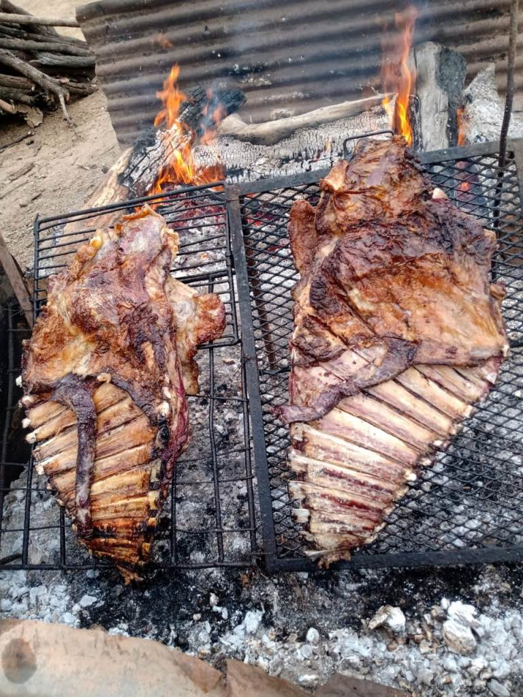

Bienvenidos a mi primer pagina

Inicio
Horarios
Listas
Fotito del verano
Islote de Raut
Este islote se encuentra en el KM 341½ de la hidrovía del Paraná.
Enlaces a las Tareas
Clase 2
Ir a Listas
Ir a Tablas